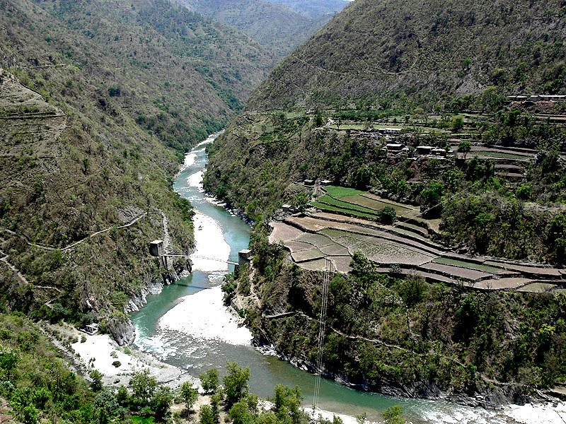
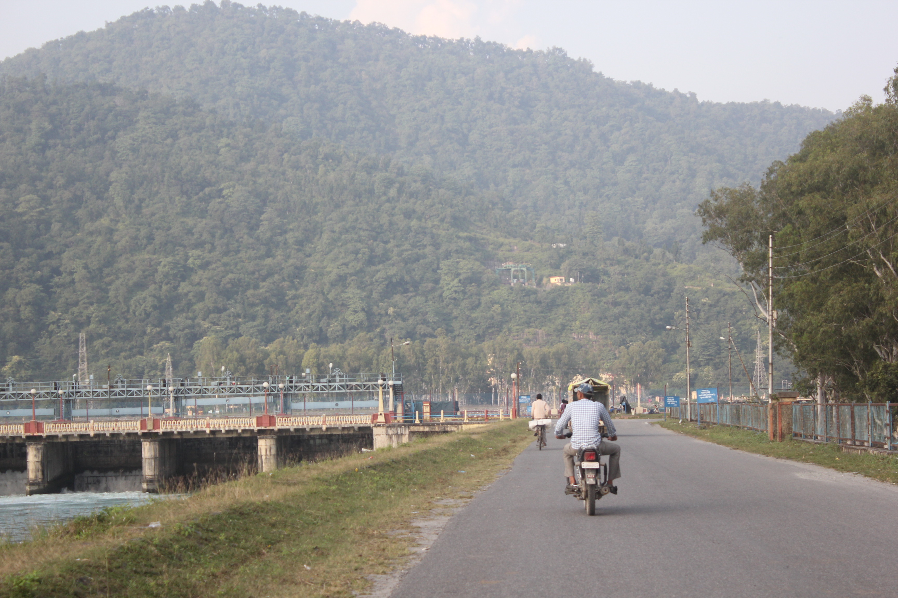
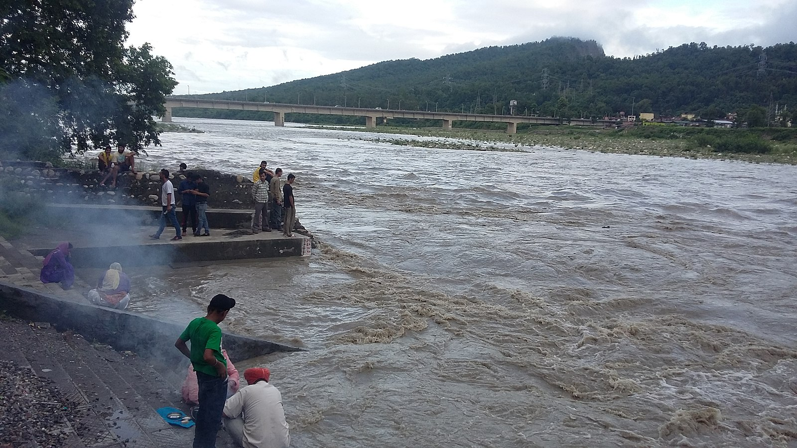
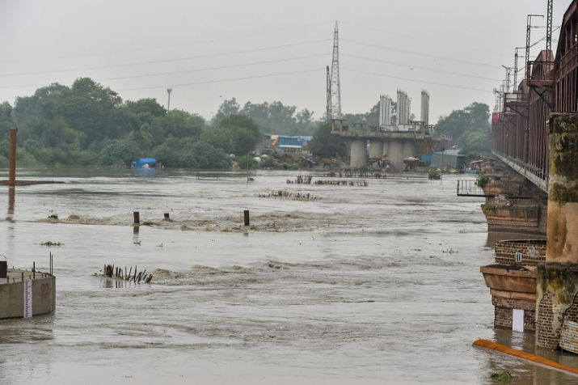
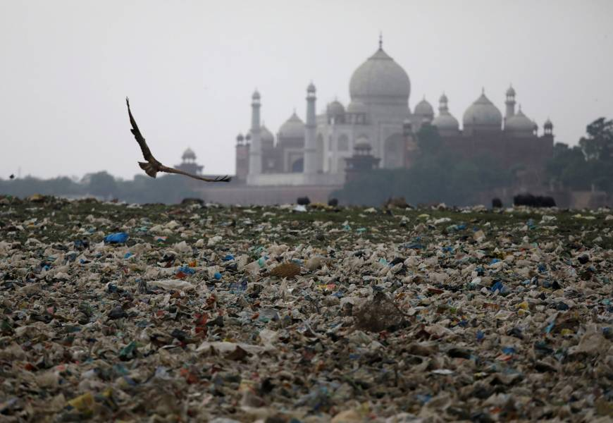
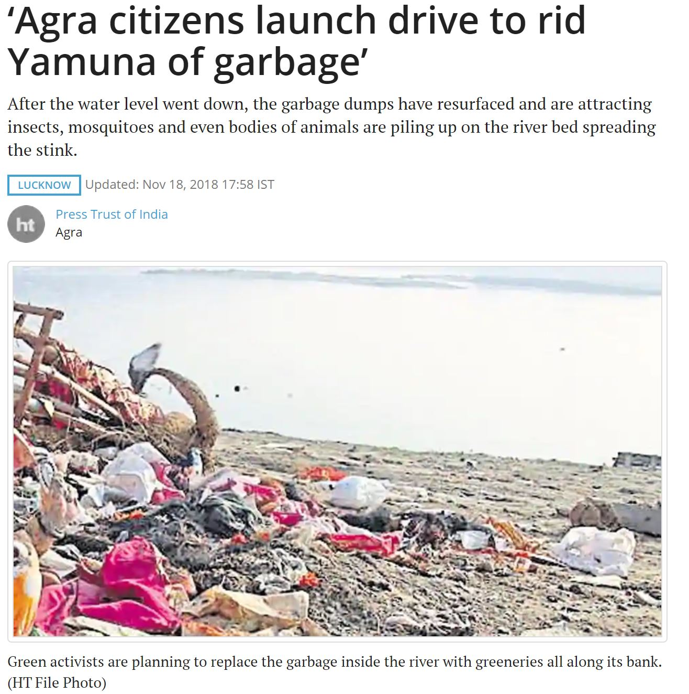

India's Yamuna River
The Yamuna river is 855 miles long, which is about the same distance from here to Chicago.Yamunotri
The river starts up at Yamunotri, where there's a temple dedicated to the Goddess Yamuna and some hot springs. Several kilometers north of the temple, up into the Himalayas, is the source of the river: the Champasar Glacier.
Dakpathar
The Dakpathar Barrage is a concrete dam across the Yamuna River. It diverts water into the East Yamuna Canal for hydroelectric power production at two Power Plants. Construction began in 1949 and was finished in 1965, delayed due to funding. Paonta Sahib
Paonta Sahib is an industrial town on the Yamuna that is involved in the pharmaceutical, hydroelectric, and dairy industries. Its population is a bit higher than New Haven's, at about 150,000 people. It is also an important place of worship for Sikhs, with a giant Gurudwara right on the river. Yamunanagar
Yamunanagar is known for its industry, a sprawling city with exploding population due to immigration. Its main industries are paper manufacturing and sugar machinery. Delhi
Delhi is the center of the Yamuna's pollution problems. The demand for water in Delhi is far above what its several treatment plants can supply. Delhi requires 1,200 mgd, but DJB has been able to supply only 860 mgd this summer. One issue is the "tanker mafia" -- stolen clean water is sold at a premium to the people who need it. Nearly half of the water released from DJB is stolen. Against a generation of over 1,000 mgd of sewage in 2015, Delhi has a treatment capacity of only around 700 mgd. This means a lot of the sewage generated by the city enters the Yamuna. (Financial Express, 2018)Agra
Photo from Japan Times.
Prayagraj
Formerly Allahbad, but known as Prayagraj since October 2018. In Hindu tradition Triveni Sangam is the confluence of three rivers. The point of confluence is a sacred place for Hindus. A bath here is said to flush away all of one's sins and free one from the cycle of rebirth. It has also been the site of immersion of ashes of several national leaders, including Mahatma Gandhi in 1948.